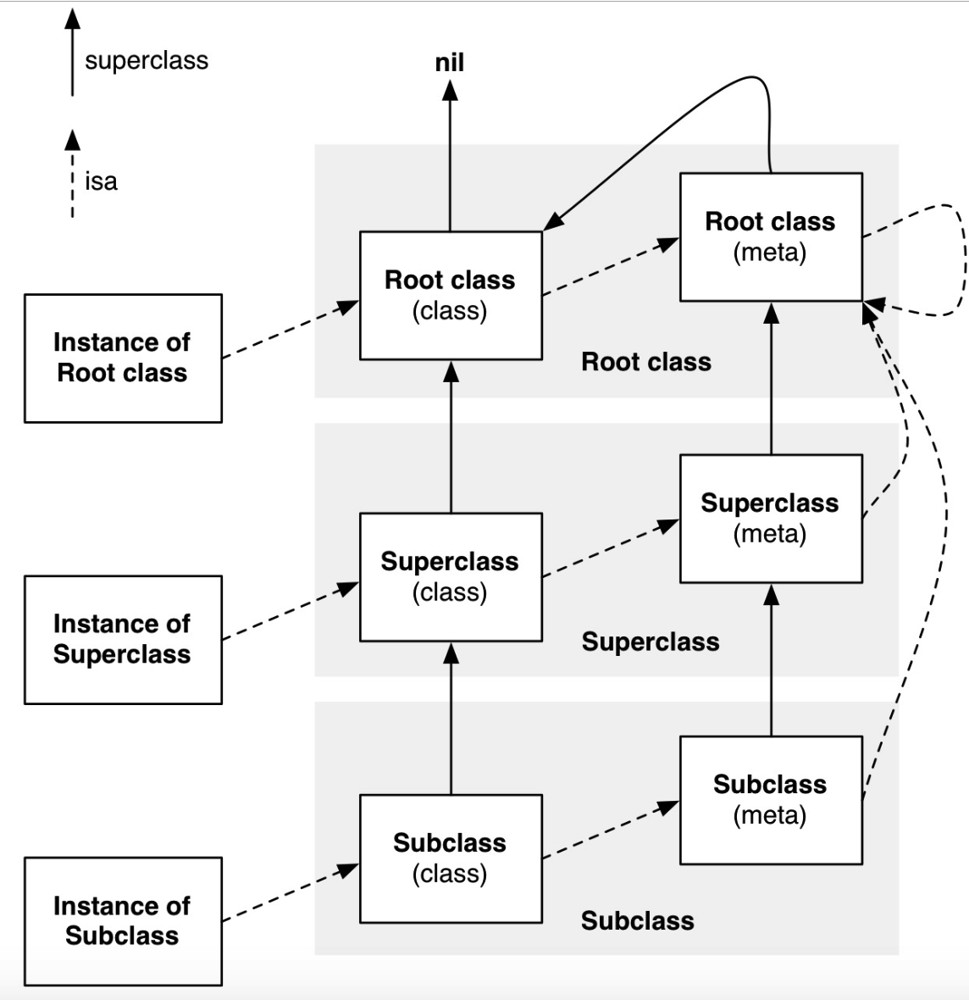

下面代码输出什么？
@interface Sark : NSObject
@end
@implementation Sark
@end
int main(int argc, const char * argv[]) {
@autoreleasepool {
BOOL res1 = [(id)[NSObject class] isKindOfClass:[NSObject class]];
BOOL res2 = [(id)[NSObject class] isMemberOfClass:[NSObject class]];
BOOL res3 = [(id)[Sark class] isKindOfClass:[Sark class]];
BOOL res4 = [(id)[Sark class] isMemberOfClass:[Sark class]];
NSLog(@"%d %d %d %d", res1, res2, res3, res4);
}
return 0;
}
先来分析一下源码这两个函数的对象实现
+ (Class)class {
return self;
}
- (Class)class {
return object_getClass(self);
}
Class object_getClass(id obj)
{
if (obj) return obj->getIsa();
else return Nil;
}
inline Class
objc_object::getIsa()
{
if (isTaggedPointer()) {
uintptr_t slot = ((uintptr_t)this >> TAG_SLOT_SHIFT) & TAG_SLOT_MASK;
return objc_tag_classes[slot];
}
return ISA();
}
inline Class
objc_object::ISA()
{
assert(!isTaggedPointer());
return (Class)(isa.bits & ISA_MASK);
}
+ (BOOL)isKindOfClass:(Class)cls {
for (Class tcls = object_getClass((id)self); tcls; tcls = tcls->superclass) {
if (tcls == cls) return YES;
}
return NO;
}
- (BOOL)isKindOfClass:(Class)cls {
for (Class tcls = [self class]; tcls; tcls = tcls->superclass) {
if (tcls == cls) return YES;
}
return NO;
}
+ (BOOL)isMemberOfClass:(Class)cls {
return object_getClass((id)self) == cls;
}
- (BOOL)isMemberOfClass:(Class)cls {
return [self class] == cls;
}
首先题目中NSObject 和 Sark分别调用了class方法。
-
+ (BOOL)isKindOfClass:(Class)cls方法内部，会先去获得object_getClass的类，而object_getClass的源码实现是去调用当前类的obj->getIsa()，最后在ISA()方法中获得meta class的指针。
-
接着在isKindOfClass中有一个循环，先判断class是否等于meta class，不等就继续循环判断是否等于super class，不等再继续取super class，如此循环下去。

-
[NSObject class]执行完之后调用isKindOfClass，第一次判断先判断NSObject 和 NSObject的meta class是否相等，之前讲到meta class的时候放了一张很详细的图，从图上我们也可以看出，NSObject的meta class与本身不等。
-
接着第二次循环判断NSObject与meta class的superclass是否相等。还是从那张图上面我们可以看到：Root class(meta) 的superclass 就是 Root class(class)，也就是NSObject本身。所以第二次循环相等，于是第一行res1输出应该为YES。
-
同理，[Sark class]执行完之后调用isKindOfClass，第一次for循环，Sark的Meta Class与[Sark class]不等，第二次for循环，Sark Meta Class的super class 指向的是 NSObject Meta Class， 和 Sark Class不相等。
-
第三次for循环，NSObject Meta Class的super class指向的是NSObject Class，和 Sark Class 不相等。第四次循环，NSObject Class的 super class 指向 nil， 和 Sark Class不相等。第四次循环之后，退出循环，所以第三行的res3输出为NO。
-
如果把这里的Sark改成它的实例对象，[sark isKindOfClass:[Sark class]，那么此时就应该输出YES了。因为在isKindOfClass函数中，判断sark的meta class是自己的元类Sark，第一次for循环就能输出YES了。
-
isMemberOfClass的源码实现是拿到自己的isa指针和自己比较，是否相等。
-
第二行isa 指向 NSObject 的 Meta Class，所以和 NSObject Class不相等。第四行，isa指向Sark的Meta Class，和Sark Class也不等，所以第二行res2和第四行res4都输出NO。